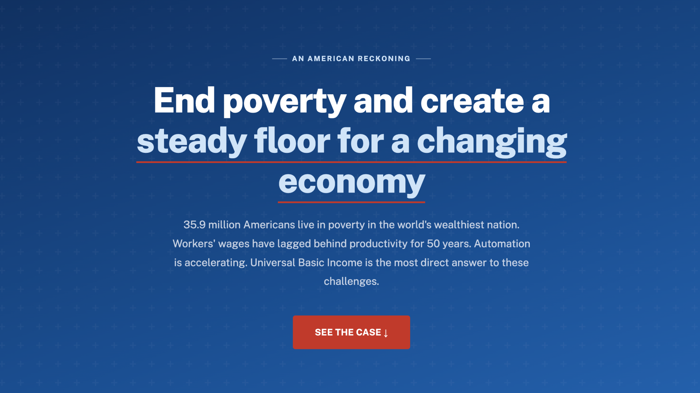

Universal Basic Income education and funding experience
An educational website that makes Universal Basic Income accessible, practical, and grounded in real-world tradeoffs.
Visit UBIProject.org ↗
Background
As a Login.gov UX Designer, I often work with agencies like the SSA, IRS, and VA, observing the complexities of public benefits. My background in Silicon Valley, and conversations with colleagues in the AI sector, sparked an interest in the intersection of automation and economic security. This led me to explore Universal Basic Income through the lenses of civic technology and design.
Project Overview
UBIProject.org is an educational website designed to make the concept of Universal Basic Income more accessible, practical, and grounded in real-world tradeoffs. The site breaks down complex economic ideas into clear, digestible sections while encouraging users to actively engage with the topic through interactive tools. Its goal is not just to advocate for UBI, but to help users understand how it could realistically work in the United States.